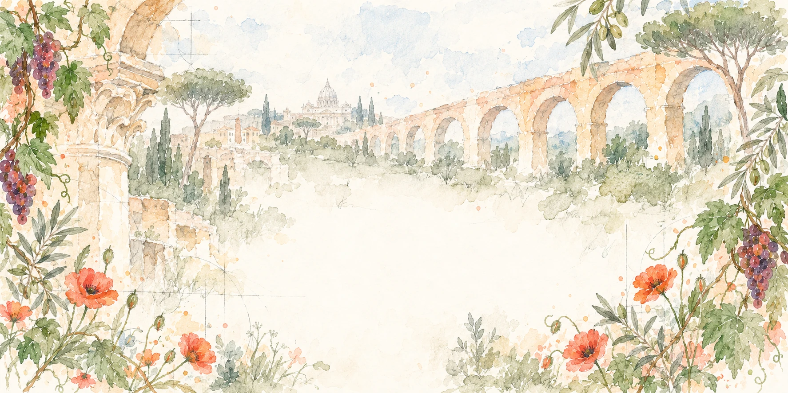
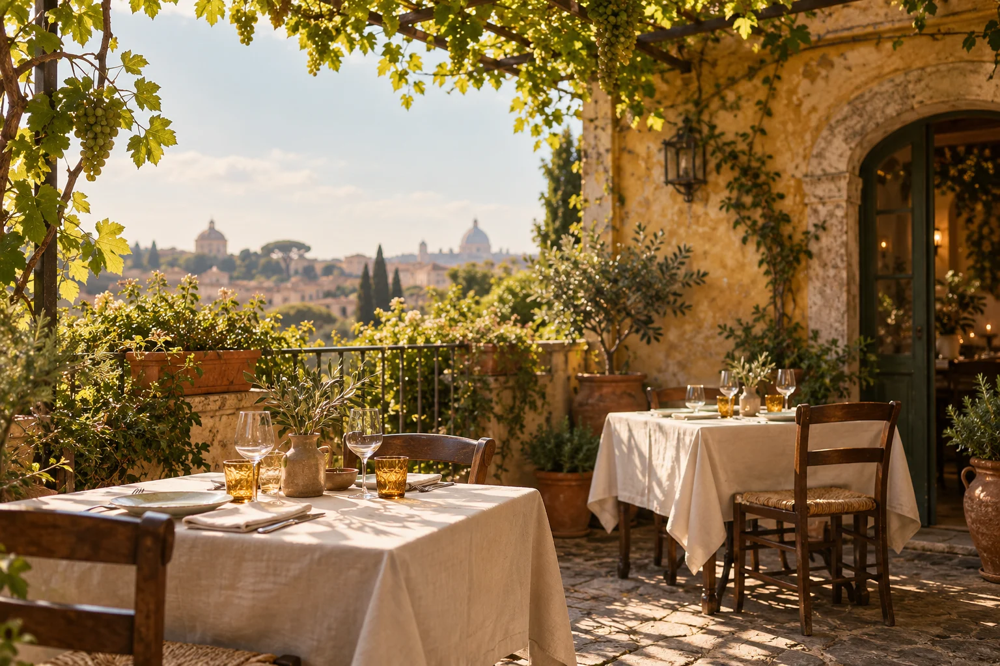

Il servizio digitale per i ristoranti
Il tuo ristorante,
anche fuori dalla sala.
Il sito del locale, le prenotazioni e gli assistenti AI.
Li prepariamo e li seguiamo noi. Tu mantieni il controllo.
Il servizio
Tre parti.
Un solo servizio.
Un sito che racconta il locale, un’agenda per la sala e un aiuto nelle conversazioni. Tutto intorno al tuo ristorante.
Conosci gli assistentiMenu, foto, orari. Il locale si presenta.

Il tuo ristoranteIl piacere
di ritrovarsi.
Il servizio della sera
Assistente Maiora
Un aiuto per il localeDal primo sguardo alla prenotazione: un sito pensato per il tuo ristorante, seguito nel tempo.
Gli assistenti
Un aiuto per te.
Una voce per i tuoi ospiti.
Chiedere una modifica, organizzare la sala, capire i dati.
Oppure trovare una risposta e prenotare un tavolo.
Scegli un esempio.
Ti mostro come lavoro.
Vorrei aggiungere il risotto ai funghi al menu.
Volentieri. Indicami il prezzo; se vuoi, aggiungi una descrizione. Preparo la richiesta, poi potrai controllare l’anteprima prima di approvarla.
Nel lavoro di ogni giorno
- Sito e novità. Modifica testi, foto e menu. Prepara contenuti temporanei, controlla l’anteprima e decidi cosa pubblicare.
- Agenda e sala. Segui prenotazioni e arrivi. Gestisci turni, regole e chiusure dopo averne controllato l’impatto.
- Statistiche e report. Confronta prenotazioni e coperti. Chiedi riepiloghi o programma report settimanali e mensili.
- Guida e preferenze. Trova aiuto nell’app e indica le preferenze da ricordare per il tuo lavoro.
Nelle conversazioni con gli ospiti
- Le informazioni giuste. Risposte su menu, orari e contenuti pubblicati dal ristorante.
- Le prenotazioni. Dalla disponibilità al riepilogo da confermare, anche per modifiche o cancellazioni.
- La lingua dell’ospite. Un’accoglienza che si adatta alla conversazione.
- Quando serve una persona. Indica come contattare il personale, senza inventare risposte.
Puoi partire anche da un vocale. L’assistente riepiloga ciò che ha capito; per eseguire le operazioni serve la tua conferma scritta.
Come funziona
Si parte dal tuo ristorante.
Si continua insieme.
Tu conosci il locale. Noi prepariamo il servizio
e lo seguiamo anche dopo l’avvio.
- 01
Ci racconti.
Il ristorante, la squadra e il modo in cui lavori. Partiamo da quello che ti serve.
- 02
Prepariamo.
Mettiamo insieme sito, agenda e assistenti. Guardi il lavoro e lo provi.
- 03
Tu approvi.
Controlli l’anteprima, chiedi gli ultimi ritocchi e scegli quando partire.
- 04
Ci siamo.
Restiamo al tuo fianco per aggiornamenti, domande e nuove esigenze.
Dal latino
- Ad
- Verso
- Maiora
- Cose più grandi
Un augurio. Un modo di lavorare.
MAIORA
Ogni luogo è fatto anche delle persone che lo attraversano.
Roma, un punto di partenza.
Parliamone
Partiamo dal
tuo ristorante.
Raccontaci come lavori oggi e cosa vorresti cambiare. Guardiamo insieme da dove cominciare.
Stiamo preparando le prime attivazioni a Roma.
Lascia un recapito.
Prima di sentirci
Ho già un sito. Devo ricominciare?
Partiamo da quello che hai: menu, foto, informazioni e modo di lavorare. Nel primo confronto decidiamo cosa mantenere e cosa migliorare.
Come chiedo una modifica?
La richiedi dall’app e ne segui lo stato. Controlli l’anteprima e approvi la versione prima di scegliere quando pubblicarla.
E le prenotazioni prese al telefono?
Tu e il personale le aggiungete nella stessa agenda usata dal sito e dalla chat.